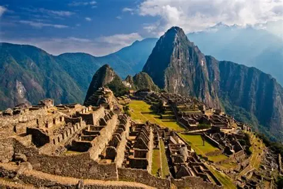
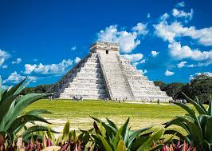

Quiz: Incas, Mayas y Aztecas
Curiosidades
- Incas: Construyeron Machu Picchu sin usar mortero y sus muros resisten terremotos.
- Mayas: Desarrollaron el concepto de cero independientemente de otras culturas y tenían un sistema de escritura jeroglífica.
- Aztecas: Su capital Tenochtitlán, edificada sobre un lago, era una de las ciudades más grandes del mundo en el siglo XVI.

Incas - Machu Picchu

Mayas - Chichén Itzá

Aztecas - Templo Mayor